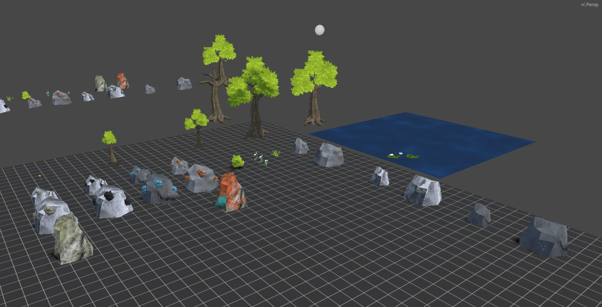
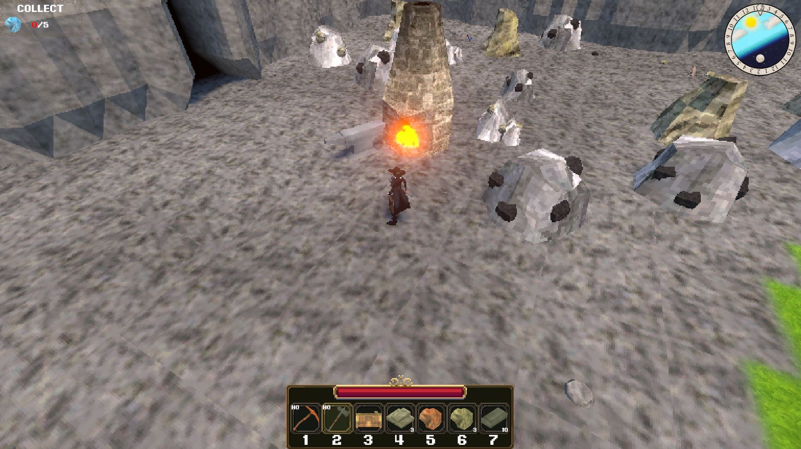

Itch page
Project Survival
2026
Duration: 6 months
Team size: 1
Crafting survival game in a PS1 aesthetic with a deep crafting mechanic and lots of destructible resources. Explore, gather and craft to survive and find a way past the crystal that trapped you.


For this game, I wanted to challenge all of my skills rather than just focusing on design alone. Because of this, during development of this game, I designed gameplay, built tools and made almost all in-game assets. I had two goals in terms of gameplay: I wanted a complex crafting system where players needed to think about what they do to craft an item instead of just pressing a button and getting the item. I also wanted the environment to be filled with destructible objects that all drop their items onto the ground when destroyed. For crafting, I made a crafting minigame in which players have a limited number of actions they can perform, which they have to move pointers on bars into specific areas. The bars have two points; the blue area is a requirement to craft the item. If any bar is not in the blue area, the item is not crafted. The bars also have a green area; when the pointers are in here, the chance to get a high quality version of the item goes up. High quality versions of the items have higher stats than the normal versions. Over the course of the game, the crafting recipes start to have more of these bars, starting with 1 and ending with 4. This created an interesting challenge when players tried to upgrade to a new tool.


During development, I created various tools for the project but also more generic Unity tools. I created a terrain tile set system because I originally planned to let players change the type of ground, for example, from grass to dirt to plant crops on it. To paint the default tiles of the terrain I made a tool in Unity which you can see on the left. But I also made other tools, such as one to allow me to design the crafting recipe bars visually rather than numerically and a Unity scene list to quickly swap between scenes instead of finding them in the folder structure.
Because I wanted to challenge all of my skills for this project, I modelled, textured, rigged and wrote the shader code for all but one of the 3d assets in the game. To stay close to the PlayStation 1 era aesthetics, I limited the models to low poly counts with simple textures that are at most 64 by 64 pixels. I added extra detail through vertex painting and through shaders that made the vertices snap to pixel positions, as the PS1 does. I primarily strayed from how the PS1 would do things in the lighting of the game. My game did feature real-time shadows, but I limited and crunched down the shadow textures to a low resolution to bring it back in style.


This all comes together in an overall fairly simple game of collecting resources to make tools. With a loop that the player keeps going through of collecting resources and upgrading to new tools. Even though the gameplay is just this aspect and the rest of the loops you normally see in this genre of games were missing, players did keep playing for 45 minutes to 2 hours. Given more development time and adding more features, this game could have potential, but it currently is missing something that makes it stand out from the rest in the genre.